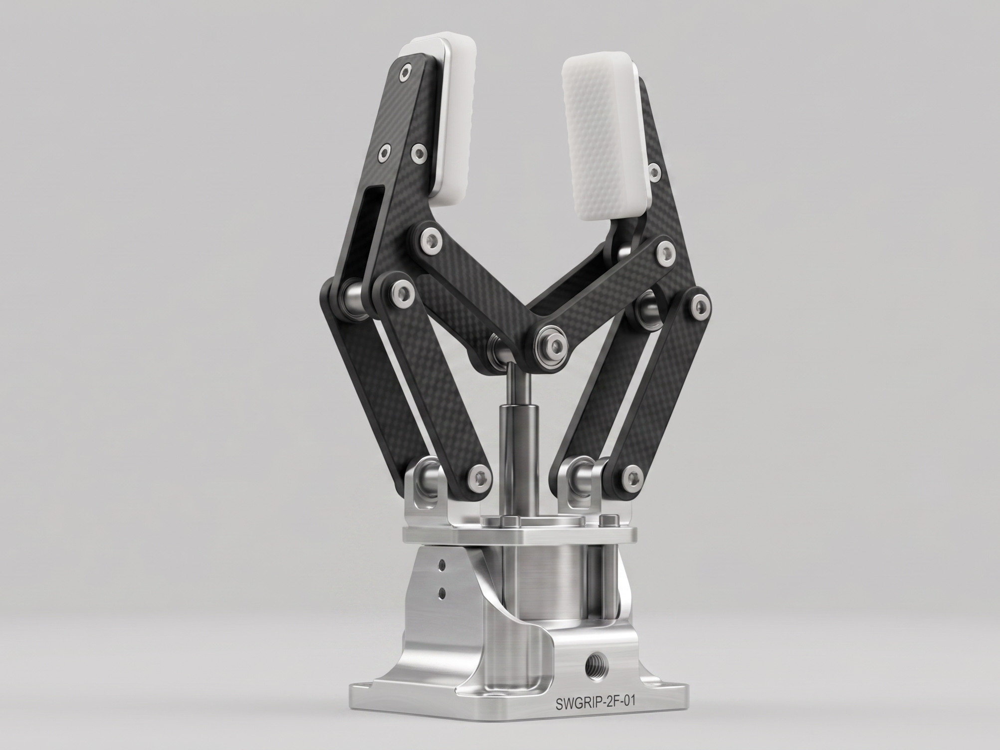

Modular Hybrid Gripper System
A comparative study of lightweight materials — Aluminum 6061, Carbon Fiber, and PA12 Nylon — for a configurable two-finger gripper designed for industrial lean automation.
Project Abstract
Optimizing Gripper Materials for Industrial Performance
This project investigates material selection for a modular two-finger robotic gripper intended for lean manufacturing environments. The gripper's modular architecture allows finger geometry to be swapped without re-tooling the entire assembly, reducing changeover time in multi-variant production lines.
Three candidate materials — Aluminum 6061-T6, Carbon Fiber Reinforced Polymer (CFRP), and Selective Laser Sintered (SLS) PA12 Nylon — are evaluated across structural, thermal, and economic dimensions using FEA simulation and empirical load testing.

Materials
Three Candidates, One Best Fit
Each material offers distinct trade-offs between stiffness, weight, manufacturability, and cost.
Aluminum 6061-T6
Industry-standard structural aluminum. High strength-to-weight ratio, excellent machinability, good thermal conductivity. Baseline reference for comparison.
- Density2.70 g/cm³
- Tensile Strength310 MPa
- Young's Modulus69 GPa
Carbon Fiber (CFRP)
Unidirectional carbon fiber composite. Highest specific stiffness of the three. Optimal for applications where weight is the primary constraint and cost is secondary.
- Density1.55 g/cm³
- Tensile Strength600+ MPa
- Young's Modulus70–105 GPa
PA12 Nylon (SLS)
Additive-manufactured polyamide. Enables complex internal geometries impossible with subtractive methods. Low per-unit cost at small batch sizes, best for rapid iteration.
- Density1.01 g/cm³
- Tensile Strength48 MPa
- Young's Modulus1.6 GPa

Methodology
Simulation-Validated Comparison
Each material was modeled in SolidWorks under identical boundary conditions: 50 N grip force, distributed across the contact patch of both fingers. Von Mises stress, displacement, and factor of safety were extracted for each variant.
Key Results
Material Performance Matrix
Five criteria evaluated via FEA simulation and load testing at 50 N grip force.
| Criterion | Al 6061-T6 | CFRP Recommended | PA12 Nylon |
|---|---|---|---|
| Mass per finger ↓ lower is better | High | Lowest | Low–Medium |
| Peak stress (Von Mises) ↓ lower is better | Moderate | Lowest | High |
| Safety factor ↑ higher is better | Good | Excellent | Inadequate |
| Ease of manufacture | Excellent | Moderate | Good — SLS only |
| Material cost ↓ lower is better | Low | High | Medium |
CFRP is recommended for weight-critical applications despite higher material cost. Al 6061-T6 is preferred when cost and manufacturability are the primary constraints.
Team